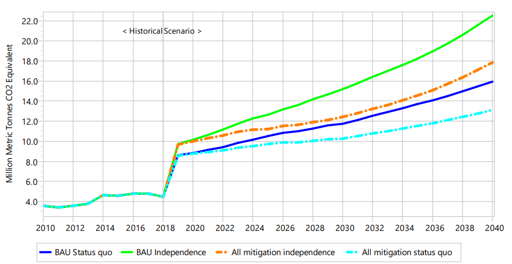
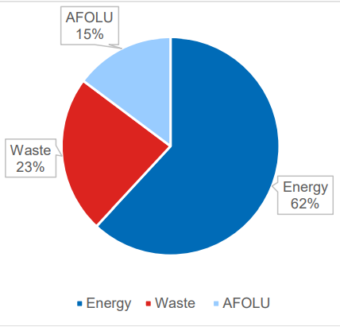

The State of Palestine’s First Nationally Determined Contributions (NDCs)
“Updated Submission”
October 2021
Acknowledgment
We would like to thank the NDC Partnership for the support provided to update Palestine’s First NDC under Climate Action Enhancement Package (CAEP) aiming at enhancing the quality, increase the ambition, and implement Palestine’s NDC. Thanks are extended to the NDC Support Facility (NDC-SF) of the World Bank that was created under the umbrella of the Climate Support Facility (CSF) trust fund to facilitate the implementation of countries NDCs. We thank the Islamic Development Bank for their support under CAEP. We also thank our National Climate Change Committee and the national stakeholders for their active engagement in the NDC update process. Finally, we thank the national and international team of experts for their efforts and dedication, as well as for Environment Quality Authority staff for their role in coordinating and facilitating the NDC update process. Without involvement of all of the above, this NDC update was not possible.
List of abbreviations
|
List of abbreviations |
|
|
ACE |
Action for Climate Empowerment |
|
AFOLU |
Agriculture, forestry and other land use |
|
BAU |
Business-as-usual |
|
BUR |
Biennial Update Report |
|
CAEP |
Climate Action Enhancement Package |
|
CCFF |
Climate Change Financing Framework |
|
CSA |
Climate-smart agriculture |
|
EQA |
Environment Quality Authority |
|
ETF |
Enhanced Transparency Framework |
|
EV |
Electric vehicle |
|
GHG |
Greenhouse gas |
|
GPP |
Gaza Power Plant |
|
HEV |
Hybrid-electric vehicle |
|
INCR |
Initial National Communication Report |
|
IPPU |
Industrial processes and product use |
|
ITMO |
Internationally transferred mitigation outcomes |
|
LEAP |
Low Emissions Analysis Platform |
|
KPI |
Key performance indicator |
|
MRV |
Measurement, reporting, and verification |
|
NAP |
National Adaptation Plan |
|
NDCs |
Nationally Determined Contributions |
|
PV |
Photovoltaic |
|
SMART |
Specific, measurable, achievable, relevant, time-bound |
|
UNFCCC |
United Nations Framework Convention on Climate Change |
|
USD |
United States Dollars |
The Palestinian Authority is delighted to present its Updated Nationally Determined Contributions (NDC) to the UN Framework Convention on Climate Change (UNFCCC). This was approved by the National Climate Change Committee on 5 October 2021 and is duly signed by the Chair of the National Climate Change Committee, Chairman of the Environment Quality Authority (EQA) in Palestine, Mr. Jamil Mtoor, in the cover letter that is appended to these NDCs. They replace Palestine’s First NDCs, which were submitted to the UNFCCC on 21 August 2017, and include amendments and additions to actions to 2040 that are conditional on receiving international support.
While Palestine’s contributions to global emissions are negligible, it is one of the most vulnerable countries to climate change considering its location in the Mediterranean region; a hot spot for climate change and its impact.1 Consequently, Palestine’s overriding priority must be adaptation to ensure climate change impacts do not hinder Palestine’s sustainable development. Nonetheless, despite our miniscule contribution to global emissions, we have increased our ambition to mitigate greenhouse gas (GHG) emissions, beyond the targets in our First NDC in 2017, and are committed to climate leadership.
Key stakeholders and national partners across all sectors in Palestine have worked collaboratively to develop these climate adaptation and mitigation goals, and to strengthen the national institutions in Palestine to ensure that the goals and targets of these Updated NDCs are achieved, driving sustainable development, and ensuring prosperity for future generations. However, Palestine cannot achieve its ambitious climate adaptation and mitigation goals alone. Without appropriate support, its climate adaptation and mitigation plans cannot be effectively implemented. Palestine looks to international partners to support its NDC actions through finance, technology, and capacity-building support, while it continues to seek sovereignty, freedom, and independence.
2 Summary of changes from the First NDCs
Although Palestine must prioritise climate adaptation nationally, nonetheless, through these Updated NDCs, Palestine demonstrates its commitment to climate mitigation and the global objective of the UNFCCC and Article 2.1(a) of the Paris Agreement to hold the increase in the global average temperature to well below 2°C above pre-industrial levels and pursue efforts to limit the temperature increase to 1.5°C. Even with the multi-layered challenges facing Palestine, the Palestinian Government has decided to increase its ambition regarding its conditional mitigation contribution, as outlined in Table 1 below. Further detail on the differences between the two NDCs is set out in Appendix 1.
|
NDC |
Independence Scenario |
Status-quo Scenario |
|
2021 |
26.6% emissions reduction by 2040 relative to business-as-usual |
17.5% emissions reduction by 2040 relative to business-as-usual |
|
2017 |
24.4% emissions reduction by 2040 relative to business-as-usual |
12.8% emissions reduction by 2040 relative to business-as-usual |
Since the development of its First NDCs in 2017, the State of Palestine has made significant advancements in its climate action planning. For example, it has developed 14 investment- ready NDC implementation action plans for six of the 12 most vulnerable sectors in Palestine, as identified in the National Adaptation Plan (NAP): agriculture, energy, health, transport, waste, and water. The targets contained in these plans replace the conditional actions contained in the First NDCs for those sectors. The new conditional actions are gender- responsive, time-bound, and contain measurable targets, evidencing Palestine’s increased ambition in the Updated NDCs. Appendix 2 outlines the changes made to the conditional actions in Palestine’s First NDCs by sector. In addition, Palestine has also produced an NDC Partnership Plan containing proposals to develop further NDC implementation action plans for priority actions within these sectors and for other priority sectors, as well as cross-cutting priority activities that support all sectors. The NDC Partnership Plan is discussed further below.
It is essential that support for implementing the Updated NDCs is secured from the international community to enable implementation of its actions. Palestine’s First NDCs identified substantial gaps in necessary finance, as do the Updated NDCs. However, development of the NDC implementation action plans means that related figures presented in the NDC are now backed by detailed financial breakdowns in relation to planned activities. Furthermore, the Updated NDCs further articulate how Palestine intends to access the finance it needs to implement the NDC actions. While it remains vital that international donors are a major source of financing, the Updated NDCs also outline how Palestine intends to explore other financing options, including leveraging private finance through enhanced private sector engagement and exploring the role of carbon markets.
On 17 March 2016, the State of Palestine officially became the 197th party to the UNFCCC and, on 22 April 2016, signed and ratified the Paris Agreement which entered into force on 4 November 2016. While the State of Palestine’s priority on climate change is adaptation, it is also committed to ensuring that its emissions pathway is in line with the objective of the UNFCCC to stabilise greenhouse gas emissions at a level that prevents dangerous anthropogenic interference with the climate system.
The State of Palestine submitted its Initial National Communication Report (INCR) to the UNFCCC on 11 November 2016, highlighting its commitment to being an active player in tackling and responding to climate change. Palestine also developed its NAP, in accordance with the UNFCCC’s Guidelines for NAPS and, on 11 November 2016, became the sixth party to submit its NAP to the UNFCCC. The period between joining the UNFCCC and submitting the INCR and NAP was less than eight months, highlighting the importance of climate change within Palestine’s national agenda.
Palestine’s climate action planning has continued throughout the COVID-19 pandemic, with the development in 2020-2021 of 14 NDC implementation action plans for the agriculture, energy, health, transport, waste, and water sectors, in close consultation with sectoral stakeholders, supported by development of the Technology Roadmap for the Implementation of Climate Action Plans in Palestine2. The NDC implementation action plans contain:
“SMART”3 targets, which form the basis of revised NDC actions for those six sectors
Activities and associated detailed costings to achieve those targets
Institutional arrangements for implementation of the plans and associated activities; and
Policy recommendations to ensure an enabling environment for plan implementation.
An NDC Partnership Plan containing 45 key performance indicators drawn from its NDC implementation action plans and additional needs (related to sectors with such plans, other priority sectors needing such plans, and cross-cutting priority activities), as identified by key stakeholders
An NDC Investment Plan outlining Palestine’s strategy to fill the funding gap identified in its NDC Partnership Plan, and
The mitigation chapter of its First Biennial Update Report (BUR), which will be submitted to the UNFCCC once all its chapters have been completed.4
In a holistic effort to improve conditions, the Palestinian Government developed a National Policy Agenda 2017-20225 with policies and strategies designed to establish the sovereign state, ensure effective and citizen-centred governance, and promote sustainable development. The Government has built on the National Policy Agenda through the National Development Plan 2021-2023, which sets out Palestine’s vision of how it will build back better, fairer, and greener after the COVID-19 pandemic.
The Updated NDCs, therefore, build upon Palestine’s First NDC, INCR, NAP, NDC Partnership Plan, NDC Investment Plan, the 14 NDC implementation action plans, the mitigation chapter of the BUR, and accord with the National Development Plan 2021-2023 and its associated sectoral strategies to achieve sustainable economic development in line with adaptation and emissions reduction priorities. Thus, the Updated NDCs build upon the active stakeholder engagement undertaken to develop the documents and strategies on which they rely and are endorsed by the Palestinian Government.
Palestine constitutes the Occupied Palestinian Territory, which is made up of the West Bank (including East Jerusalem) and the Gaza Strip, based on the borders of June 1967 and are separated by Israel, the occupying power. Neighbouring countries include Jordan to the east and Egypt to the south. The Oslo II Accord, formally entitled the ‘Interim Agreement on the West Bank and the Gaza Strip of 1995’, created three territorial zones in the West Bank: Area A, where the Palestinian Government has responsibility for public order and internal security; Area B, where the Palestinian Government assumes responsibility for public order for Palestinians, while Israel controls internal security; and Area C, where Israel maintains exclusive control.
Most land resources are in Area C, which is under full Israeli control. Restrictions on access to land and actions that can be taken, especially in this area, pose challenges for implementation of both mitigation and adaptation actions. Hence, the Updated NDCs focus on actions that can be implemented despite the occupation.
The State of Palestine, as a party to the UNFCCC, is committed to its core principles of common but differentiated responsibilities and respective capabilities and equity. The Updated NDCs support and seek to implement this principle on both global and national levels:
On a global level, it is important to recognise that a small number of countries are responsible for most greenhouse gas (GHG) emissions now and will be in the future.6 These countries are also in the best position to support countries like Palestine, which have contributed little to global emissions but are bearing a significant proportion of the burden of climate change, through technology transfer, capacity building and finance.
At a national level, Palestine will implement adaptation and mitigation measures based on equity, ensuring equal and equitable protection of women, children, the poor, and other vulnerable groups.
Palestine’s domestic priority is climate adaptation rather than mitigation. It is highly vulnerable to the adverse impacts of climate change but responsible for less than 0.01% of global emissions.7 As identified in the mitigation chapter of the First BUR, Palestine’s per capita emissions were 0.8 tCO2e in 2011, substantially less than the global average of 6.73 tCO2e per capita at that time.8 The State of Palestine’s key climate goal is to reduce its climate vulnerabilities, primarily through increasing adaptive capacities, and, thereby, enhance the climate resilience of the national development process and local communities.
At the same time, all efforts will be made to select measures that also have a mitigation benefit. The State of Palestine is committed to ensuring that its emissions pathway is in line with the objective of the UNFCCC and the Paris Agreement to hold the increase in the global average temperature to well below 2°C above pre-industrial levels and pursue efforts to limit the temperature increase to 1.5°C. Palestine will seek to maximise mitigation opportunities in line with its adaptation and wider sustainable development goals. A holistic approach will be taken to ensure that climate change or non-climate change activities in one sector do not restrict adaptation in other sectors. Palestine’s approach to the adaptation-mitigation nexus is set out in Section 4.1, below.
All of Palestine’s climate actions will be gender responsive and will be based on equity, ensuring equitable protection of disadvantaged groups in society. The State of Palestine supports the over-arching goal of Action for Climate Empowerment (ACE) to empower all members of society to engage in climate action, as outlined further in Section 8.
4.1 The adaptation-mitigation nexus
Palestine recognise that if mitigation actions are designed without considering climate vulnerabilities and risks, they may be maladapted or lead to wider maladaptation (i.e. by compounding climate impacts). On the other hand, well-designed climate mitigation actions can be resilient to climate impacts and reduce climate vulnerabilities and risks more generally. Similarly, climate adaptation actions may reduce or increase GHG emissions.
Given the inherent, inseverable connections between climate adaptation and mitigation, all NDC actions drawn from the NAP and the NDC implementation action plans have been prioritised in relation to both adaptation benefits (i.e. the extent to which they reduce climate sensitivities, increase adaptive capacities, and reduce exposure) and mitigation benefits, alongside a range of other criteria. Hence, adaptation options have been favoured that reduce or minimise GHG emissions. Similarly, mitigation options that actively support adaptation have been favoured. Where that is not possible, mitigation options that are not potentially maladapted or would not lead to wider maladaptation have been selected.
The NDC actions in each sector have both positive and negative impacts on NDC mitigation and adaptation actions in other sectors. Palestine’s NDC Partnership Plan, therefore, provides for development of NDC implementation action plans addressing the nexus between sectors,9 which will be developed when funding is secured.
Israeli occupation substantially reduces Palestine’s adaptive capacities thereby compounding climate vulnerabilities. For example, Israeli occupation of the State of Palestine restricts availability of land and resources, freedom of movement of goods and people, import and export of raw materials and products, full control of international borders, and the development of domestic and industrial infrastructure. These limitations on Palestine’s adaptive capacities are most prevalent in Area C, which is under full Israeli control and covers more than 61% of the occupied West Bank, and in the Gaza Strip.
The State of Palestine’s NAP was approved by all relevant ministries in May 2016. Palestine’s particular circumstances mean that the NAP is focused on the implementation of immediate, near-future adaptation actions that address issues that are highly vulnerable to climate change under Israeli occupation. However, the NAP also considers medium- and long-term adaptation actions that can be taken when the Israeli occupation ends.
All stages of Element A (‘Lay the groundwork and address gaps’) and Element B (‘Preparatory elements’) of the NAP process, as described in the UNFCCC’s Guidelines for NAPs, have been completed and resultant priority actions were included in Palestine’s First NDCs. Furthermore, Element C (‘Implementation Strategies’) has been progressed for six of the NAP’s priority sectors through the development of NDC implementation plans that include targets that are the basis of revised NDC actions. Hence, Palestine has used the NAP as a foundation for developing a mutually supportive NAP and NDCs in accordance with international guidance on Linking NAP processes with NDCs. The State of Palestine aims to maintain an active NAP process to support development and implementation of the NDCs. Financial support is needed to progress Element C in relation to NDC actions that resulted from the NAP that are not already addressed by NDC implementation action plans, Element D (‘Reporting, Monitoring and Review’), and review and update of the NAP itself, as it is five years since it was first developed.
5.1 Adaptation priorities by sector
Adaptation actions are, by their nature, interrelated with each other and with mitigation actions, which are addressed in Section 6. However, consideration of adaptation priorities by sector is important, as it ensures that the immediate, direct relevance of adaptation to a broad range of actors is clear.
The NAP identifies the following 12 sectors as “highly vulnerable” to climate change: agriculture, coastal and marine, energy, food, gender, health, industry, terrestrial ecosystems, tourism, urban and infrastructure, waste and wastewater, and water. The adaptation actions identified and included in the Updated NDCs aim to reduce climate sensitivity or increase adaptive capacity in relation to each of the highly vulnerable issues across these sectors and take into consideration national development goals. Rather than addressing gender as a separate “sector”, gender has been mainstreamed in all NDC implementation action plans developed for six of the highly vulnerable sectors: agriculture, energy, health, transport, waste, and water. These plans build upon and update the NDC actions set out in Palestine’s First NDCs.
In addition to the existing plans, Palestine’s NDC Partnership Plan provides for the development of NDC implementation action plans for the remaining sectors identified in the NAP, which will be developed when funding is secured. Adaptation needs for each of the highly vulnerable sectors and associated NDC adaptation actions, which are conditional on receiving international support, are discussed below.
The consultative planning processes underpinning the Updated NDCs considered priorities across the adaptation-mitigation nexus. Hence, while this section focuses specifically on adaptation needs and associated NDC actions some of the latter are equally, or more, important for mitigation and also addressed in Section 6. A summary table of all NDC actions, outlining their relevance to adaptation and mitigation, is included in Appendix 3.
Adaptation needs
Future climate scenarios for Palestine project an increase in temperature and a decrease in average annual rainfall, translating into an increase in the risk of drought. The wettest days may also become more frequent, leading to an increased risk of flood. These extreme events and slow-onset changes are expected to:
Disturb soil quality and stability, water quality, biodiversity, and overall ecosystem health
Reduce the quality and quantity of crops that can be grown; and
Reduce the agricultural area that can be used.
This will likely lead to:
A substantial reduction in food production, which would have negative impacts on the income and employment of Palestinians working along the agricultural value chain, leading to vulnerable parts of society suffering significant losses to their livelihoods
A reduction in the quality and quantity of food products, which may also lead to food insecurity and adverse health impacts among the population
Negative impacts on all sectors relying on ecosystem services, in particular agriculture, human health and water.
Conditional NDC actions
50% of farms in the State of Palestine apply gender-sensitive CSA by 2040
An annual increase of 2% until 2040 in the total area of forest land, rangeland and upland rehabilitated and sustainably managed.
To address these needs, two NDC implementation action plans have been developed for the agriculture sector on: (1) Climate-smart agriculture (CSA), and (2) Climate-resilient land planning and management. The targets contained in these plans form the basis of two conditional actions. As identified in the NDC Partnership Plan, international funding is also needed to develop a further NDC implementation action plan for sustainable livestock production and management.
5.1.2 Energy
Adaptation needs
All three climate scenarios on which Palestine’s NAP is based suggest temperature will increase with warmer periods becoming more prominent. This will increase demand for energy across many sectors. However, domestic electricity production currently fulfils only 7% of consumption. As Palestine’s temperatures are projected to increase by 1-1.5 degrees C by 2025 there is an urgent need to do more to improve energy security through promoting domestic renewable energy production, improving the resilience of the energy distribution system, and increasing energy efficiency, all of which have high adaptation co-benefits by improving security of energy supply and air quality, which will be beneficial to many sectors e.g. industry, water, agriculture, etc.
Conditional NDC actions
Upgrade of the electricity grid to enable distribution of renewable energy, primarily from solar photovoltaic (PV), by 2030
Improve energy efficiency by 20% (versus business as usual) across all sectors by 2035
20-33% of electricity to be generated from renewable energy by 2040, primarily from solar PV.
These needs are addressed by three NDC implementation action plans, which have been developed for the energy sector primarily from a mitigation perspective, on (1) Energy distribution, (2) Energy efficiency, and (3) Renewable energy production. The targets contained in these plans form the basis of three conditional actions. As these actions deliver substantial reductions in GHG emissions, they also feature in Section 6, which provides details of Palestine’s mitigation contribution by sector. The NDC Partnership Plan also identifies that international funding is needed repair damage to the electrical distribution network arising from Israeli military actions in May 2021 to increase access to renewable energy.
5.1.3 Health
Adaptation needs
Future climate scenarios for Palestine are expected to impact health in the following ways, among others:
Warm temperatures, stagnant water resulting from floods, and high water temperatures may favour the survival and reproduction rates of vectors of diseases, such as mosquitoes, fleas, ticks and/or rodents, which can contaminate water bodies and food sources
Runoff from floods may contaminate soil and water bodies, making water unsafe for human consumption, and/or contaminate crops and livestock, thereby increasing water-borne and food-borne diseases
Higher temperatures will make it more challenging to preserve food products along the value chain, increasing the chances of food-borne diseases and degrading the quality of fresh products
Higher temperatures and reduced rainfall may cause heat stress and dehydration, particularly among vulnerable population, such as children and the elderly
Reduced rainfall and higher temperatures may also reduce the quantity and quality of crops and livestock produced for consumption, and the availability of water, which may indirectly increase the likelihood of diseases.
Conditional NDC actions
To address these needs, two NDC implementation action plans have been developed for the health sector on (1) Increasing awareness and capacities for disease prevention and (2) Developing safety and monitoring systems for water, food and sanitation. The targets contained in these plans form the basis of three conditional actions. The NDC Partnership Plan also identifies that international funding is needed to assess the impact of the COVID-19 pandemic on both climate adaptation and mitigation efforts in Palestine, which will help ensure resilience in the face of future pandemics. While this assessment will necessarily involve other sectors due to the wide-ranging impacts of COVID-19, the health sector will play a leading role in its development and implementation.
Improve the capacity for disease prevention by training 300 health professionals in disease prevention by 2025
At least a 30% increase in the awareness of people, particularly women, by 2030 about measures that they can take to help prevent major diseases related to water, sanitation and food
By 2030, the capacity of the Ministry of Health to monitor the safety of water, food and sanitation increases by at least 50% from the situation in 2020.
Adaptation needs
Air pollution from road transport damages people’s health leading to respiratory problems, exhaustion, and heatstroke, among others. This exacerbates people’s sensitivity to the negative impacts of higher temperatures on health. Moreover, air pollution from road transport amplifies the urban-heat-island effect, increasing the capacity of surfaces to absorb and retain heat.
Conditional NDC actions
These needs are addressed by two NDC implementation action plans, which have been developed for the transport sector primarily from a mitigation perspective, on (1) Reducing emissions in the road transport sector and (2) Promoting sustainable road usage. The targets contained in these plans form the basis of five conditional actions. As these actions deliver substantial reductions in GHG emissions, they also feature in Section 6, which provides details of Palestine’s mitigation contribution by sector.
Reducing the emissions of the passenger vehicle fleet by 8% by 2030, and 24% by 2040
Scrapping 60% of vehicles older than 20 years by 2030 and scrapping all vehicles older than 20 years by 2040
Conducting statutory tests on 30% of on-road vehicles by 2030, and 60% by 2040
20% of all small transit vehicles are replaced with larger capacity buses by 2030, and 40% by 2040
The overall number of vehicles is reduced by 20% by 2030, and 40% by 2040.
Adaptation needs
Waste management operations are sensitive to extreme weather conditions, and impacts on the waste sector affect local communities in the following ways:
Biological activities within treatment systems (such as for leachate management) are directly affected by high temperatures and storms. Leachate from landfill sites can leak into nearby water sources, polluting and contaminating them
Higher temperatures increase the odours, pests and diseases associated with waste, which have a direct impact on local communities’ health and hygiene, as waste is, currently, left close to residential areas
Methane leakage into the atmosphere may increase with extreme heat and droughts, and cause respiratory and cardiac problems, further increasing the population’s climate sensitivity.
Conditional NDC actions
These needs are addressed by two NDC implementation action plans, which have been developed for the waste sector primarily from a mitigation perspective, on (1) improving waste management and (2) reducing emissions in the waste management sector. The targets contained in these plans form the basis of seven conditional actions. As these actions deliver substantial reductions in GHG emissions, they also feature in Section 6, which provides details of Palestine’s mitigation contribution by sector.
a. Reduce the volume of leachate by 50% by 2030 from suitable landfill sites.
As identified in the NDC Partnership Plan, international funding is needed to develop a further NDC implementation action plan(s) for various categories of special waste, including medical, electronic, construction and demolition, and hazardous or toxic waste.
Reduce the amount of waste for final disposal in landfill sites by 30% by 2030 and by 50% by 2040.
Increase the amount of waste re-used or recycled by 30% by 2030 and by 40% by 2040.
Increase the amount of waste collected to 90% by 2030 and to 100% by 2040.
Modernise (replacement of working equipment) 70% of the collection system by 2030 and by 100% by 2040.
30% reduction of methane emissions from landfill sites by 2030 and 70% reduction by 2040.
80MW of electricity produced from combustion of solid waste and methane at landfill sites by 2030 and 140MW by 2040.
Adaptation needs
Extreme events and slow-onset changes are expected to cause a decrease in the availability of water resources, while simultaneously leading to an increase in demand as a result of increasing temperatures. Efforts to meet this demand may lead to a reduction in groundwater quantity, which would damage ecosystems and soil health. On the other hand, not meeting the demand may lead to significant health impacts on the population, including dehydration and heat stress. Currently, 97% of available water in the Gaza Strip is undrinkable due to the contamination of the over-pumped coastal aquifer.
The quality of water resources may also reduce as a result of runoffs following heavy rain events and floods. This may lead to contamination of water and food resources, and subsequent impacts on people’s health. Floods may have further impacts on all other sectors of the economy, damaging infrastructure and increasing the risk of landslides.
Conditional NDC actions
To address these needs, three NDC implementation action plans have been developed for the water sector, on (1) water treatment and conservation, (2) improving water networks infrastructure, and (3) improving water sources infrastructure. The targets contained in these plans form the basis of five conditional actions. In addition, as a high priority, construction and funding of the Gaza Central Desalination Plant are currently being progressed. The construction of this desalination plant forms a sixth conditional action. As identified in the NDC Partnership Plan, international funding is also needed to understand the full extent of potential water sources beyond those already identified.
70% of the treated wastewater in large-scale wastewater treatment plants in the West Bank and Gaza are re-used by 2030.
7 MCM of rainwater in the West Bank is harvested by 2032.
Non-revenue water is reduced by 15% by 2032.
5% of rainwater in priority urban areas is drained and collected by 2032.
100% of identified wells and springs are rehabilitated by 2030.
f. Construction of the Gaza Central Desalination Plant by 2025 to provide 55 million m3 of quality fresh drinking water per year.
5.1.7 Coastal and marine (Gaza Strip)
Adaptation needs
Higher temperatures encourage fish to move from warm, shallow coastal waters into cooler, deeper waters with potentially negative implications for the quantity and quality of the fish catch. Increasing levels of carbon dioxide in the atmosphere will also lead to acidification of seawater, which will dissolve the shells of some animals, and reduce the rate of survival and affect the behaviour of fish, with consequences for the fish catch and the whole coastal and marine ecosystem.
The fishing area in the Gaza Strip has been reduced from the 20 nautical miles stipulated by the Oslo Agreement to 6 nautical miles, which is enforced by Israel. Resultant overfishing has led to diminishing fish populations. Israeli restrictions on installation of wastewater treatment plants along the Gaza Strip leads to wastewater seepage directly into the sea, polluting the fishing area.
Agricultural land amounts to about 43% of the coastal area and contributes 31% of the Gaza Strip’s total agricultural production. Sea-level rise will accelerate coastal erosion and increase saltwater intrusion, affecting nearby farms. Sea-level rise will also increase wave impact and accelerate coastal erosion, damaging harbours and other coastal structures, and potentially leading to collapse of the coastal beach cliff.10
Conditional NDC actions
As identified in the NDC Partnership Plan, international funding is needed to develop an NDC implementation action plan(s) to address the seven adaptation actions for this sector in the Gaza Strip, as identified in the State of Palestine’s First NDC, which remain relevant.
Rainwater harvesting
Construction of detached breakwaters
Introduction of new saline-tolerant crops
Enlargement of the fishing area and improving fishing equipment
Provision of beach nourishment, reclamation, and beach drift rehabilitation
Provision of laboratories and equipment for data collection and analysis
Supporting the fish packaging/preservation industry.
5.1.8 Food
Adaptation needs
As discussed above regarding the agricultural sector, domestic food production is sensitive to climate, and is expected to be further impacted by all future climate scenarios. This may lead to food shortages and price instability. There is also a lack of large-scale cold-storage facilities (increasingly problematic due to projected temperature increases), and restrictions on trade in food between West Bank and the Gaza Strip and between these Palestinian territories and international markets.
In addition, Palestine imports a significant amount of food for domestic consumption and when global food prices rise, local prices also rise. The State of Palestine lacks access to the finance required to construct large-scale storage facilities and grain silos to import and store food and grain when prices are low during periods of low demand in the international markets. Logistical problems, such as the lack of an airport, as well as Israeli barriers to imports increase the cost of trade and, thus, food prices.11
Conditional NDC actions
As identified in the NDC Partnership Plan, international funding is needed to develop an NDC implementation action plan(s) to address the four adaptation actions for this sector, identified in the State of Palestine’s First NDC, which remain relevant.
Enhancing agricultural value chain and improving infrastructure for livestock production
Greenhouse management
Construction of large-scale cold storage
Construction of large-scale steel silos for grain to enable import and storage during periods when prices on international markets are low.
5.1.9 Industry
Adaptation needs
The amount and, therefore, value of raw materials imported by a wide range of industries is potentially sensitive to changes in climate. For example, more raw materials may be imported to produce medicine to treat illnesses resulting from extreme climate conditions, or to produce building insulation in response to extreme climate changes.
In addition, storms can damage factories and lead to their collapse. Factories also may not provide a suitable working environment during extremely hot or cold weather (e.g. due to lack of adequate air-conditioning or heating). Lack of suitable storage facilities means that those products that are likely to be most negatively affected by climate include food (particularly frozen and refrigerated products), textiles, furniture, cosmetics, and cleaning products.12
Conditional NDC actions
As identified in the NDC Partnership Plan, international funding is needed to develop an NDC implementation action plan(s) to address the six adaptation actions for this sector identified in the State of Palestine’s First NDCs, which remain relevant.
Replace imported raw materials with local materials whenever possible
Building fossil-fuel storage facilities
Rehabilitation and maintenance of industrial facilities and equipment
Provision of suitable storage facilities for industrial products intended for export
Improve handling, fumigation, packaging, and storage techniques for raw materials intended for export
Capacity building to enable industries to adapt to climate change.
The State of Palestine’s First NDCs also included an adaptation action for the industry sector to “Improve water supply through wastewater collection and treatment systems”. This is now addressed by an NDC action for the water sector (above): “70% of the treated wastewater in large-scale wastewater treatment plants in the West Bank and Gaza are re-used by 2030”. Similarly, previous actions to “Reduce energy consumption through introduction of modern production technologies” and “Conduct energy audits to increase industries' use of energy efficiency measures” are now addressed under the NDC action for the energy sector (above) to: “Improve energy efficiency by 20% (versus business as usual) across all sectors by 2030.” Finally, a previous action to “Provide reliable electricity supply” is now addressed under the NDC action for the energy sector (above) to: “Upgrade the electricity grid to enable distribution of renewable energy, primarily from solar PV, by 2030.”
5.1.10 Terrestrial ecosystems
Adaptation needs
Palestine’s strategic position at the meeting point between Eurasia and Africa enriches the country's biodiversity. Species will need to shift their ranges in response to changes in climate. However, extreme climatic conditions and human activities limit species' abilities to move between terrestrial ecosystems. Ongoing loss of habitat is increasing habitat fragmentation and reducing habitat connectivity, as a result of: creeping urban development; alteration and destruction of habitats; environmental pollution; intensive use of herbicides and pesticides; and human disturbance.13
Conditional NDC actions
As identified in the NDC Partnership Plan, international funding is needed to develop an NDC implementation action plan(s) to address the adaptation action for this sector identified in the State of Palestine’s First NDCs, which remains relevant.
a. National network of protected areas, including 50 protected areas and 51 biodiversity hotspots (West Bank), Wadi Gaza and 3 biodiversity hotspots (Gaza Strip).
5.1.11 Tourism
Adaptation needs
The State of Palestine is known worldwide as the “Holy Land”, as it is the focus of three major monotheistic religions. It embraces many historical, cultural, and religious sites, which are potentially major tourist attractions. However, the condition of these sites is sensitive to climate extremes. The State of Palestine has launched a few projects to maintain and improve the condition of the cultural heritage with help from international donors. However, significant needs remain.14
Conditional NDC actions
As identified in the NDC Partnership Plan, international funding is needed to develop an NDC implementation action plan to address the adaptation action identified in the State of Palestine’s First NDCs, which remains relevant.
a. Identify, design, and implement flood management schemes for cultural heritage sites, where appropriate.
5.1.12 Urban and infrastructure
Adaptation needs
Urban areas are sensitive to floods, heat waves, droughts, and other extreme events. Rapid population growth and urbanisation are contributing to the sensitivity of cities to climate. Road infrastructure is in a poor condition and heavy rainfall can lead to its erosion, collapse, and closure, and to accidents due to the presence of dangerous curves and slopes coupled with a lack of retaining walls, traffic signals, and pedestrian bridges.
Recent developments, particularly in the Gaza Strip, have used imported western styles of architecture and techniques that are ill-suited to Palestine’s climatic conditions. New urban centres include modern high-rise buildings with glass facades; the antithesis of thermal massing. These towers feature inoperable windows and create significant energy demand to power air conditioning systems.15
Conditional NDC actions
As identified in the NDC Partnership Plan, international funding is needed to develop an NDC implementation action plan(s) to address the two adaptation actions identified in the State of Palestine’s First NDCs, which remain relevant.
Promoting green buildings
Rehabilitation of resilient road infrastructure.
6 Mitigation
Palestine is committed to ensuring that its emissions pathway is in line with the global objective of the UNFCCC and Article 2.1(a) of the Paris Agreement to hold the increase in the global average temperature to well below 2°C above pre-industrial levels and pursue efforts to limit the temperature increase to 1.5°C. Palestine’s approach is to prioritise high-emitting sectors such as, power generation, transport, and waste.
A new mitigation analysis has been carried out to produce the mitigation chapter of Palestine’s First BUR,16 which informs the Updated NDCs. This new analysis clearly highlights the State of Palestine’s increased ambition, as compared to its First NDCs. Palestine’s updated total carbon reduction by 2040 equates to a total of 2.8 Mt CO2e (Status-quo Scenario) and 4.6 Mt CO2e (Independence Scenario).
The State of Palestine, therefore, increases its commitment to reduce its GHG emissions by 17.5% by 2040 relative to the business-as-usual (BAU) levels under a scenario where the Israeli occupation continues (Status-quo Scenario), and by 26.6% by 2040 under a scenario where the Israeli occupation ends17 (Independence Scenario). In comparison, in its First NDCs (2017), Palestine committed to a 12.8% reduction (Status-quo Scenario) and 24.4% reduction (Independence Scenario) respectively.
|
Status-quo and Independence Scenarios Palestine considers two business-as-usual (BAU) scenarios when projecting its emissions until 2040: the Status-quo Scenario; and the Independence Scenario. The NDCs’ mitigation target addresses economy-wide reductions below BAU targets with the difference that there is a target for both scenarios: status-quo and independence. It is assumed that independence will lead to increased economic activity and the increased return of Palestinian refugees following the successful conclusion of negotiations and resultant improvements in economic and political conditions. Therefore, the Independence Scenario has a higher average growth rate, in terms of population and GDP, than the Status-quo Scenario. The Low Emissions Analysis Platform (LEAP) model was used to re-assess the two BAU scenarios via updates to the key growth factors (population and GDP) used in each sector, derived from the Palestine Central Bureau of Statistics (PCBS). Table 2 illustrates the differences in the growth factors used for the Status-quo and Independence Scenarios. Table 2: Differences in the growth factors used for the Status-quo and Independence Scenarios |
||||
|
Factor |
Status-quo |
Independence |
||
|
Average GDP growth rate18 |
5.8% |
8.4% |
||
|
Average population growth rate19 |
1.8% |
3.05% |
||
|
Gaza power plant transmission constraint |
0.5 (i.e., the plant is operating at 50% of its capacity due to the Israeli occupation) |
0 (i.e., the plant is operating at its full capacity) |
||
|
Electricity imports |
The starting point is 90% imported, and 10% produced. Once the West Bank power plants are operational, imports will decrease after 2025 to be between 50 and 60%. |
Imports will decrease gradually to zero in 2040. |
||
By 2040, BAU emissions are projected to reach 15.93 MtCO2e and 22.5 MtCO2e in the Status- quo and Independence Scenarios, respectively. The NDC mitigation actions discussed in the following sections, which are conditional on receiving international support, can achieve savings of 2.8 MtCO2e in 2040 compared to the BAU Status-quo Scenario and 4.6 MtCO2e compared to the BAU Independence Scenario (see Figure 1). Unlike for Palestine’s First NDCs, the BAU emissions and NDC mitigation actions take into account emissions from imported electricity (mainly from Israel). For this reason, emissions appear to increase significantly in 2019 in the figure below, as from this point emissions from imported electricity are included. This figure also incorporates the projected increase in emissions in 2019 contained in Palestine’s first NDC, due to a planned cement factory becoming operational.

6.2 Baseline GHG emissions
The baseline year chosen for the GHG Inventory is 2011, as this baseline year was used in the State of Palestine’s Intended NDC and First NDC. The total emissions in 2011 were 3.2 Mt CO2e. The country’s emissions per capita (for the West Bank, including East Jerusalem, and the Gaza Strip) were approximately 0.8 tCO2e in 2011, which is substantially less than the global average of 6.73 tCO2e per capita in 2011.20
The energy sector (including transport) was the largest source of GHG emissions with 2 MtCO2e emitted in 2011 (62% of the national total emissions). Waste is the second largest contributor to overall GHG emissions (23% of total national emissions in 2011), followed by agriculture, forestry and other land use (AFOLU) (approximately 15% of national total GHG emissions in 2011), as shown in Figure 2. The industrial processes and product use (IPPU) sector is not represented in Figure 2 because there were no direct GHG emissions reported from it.

6.3 BAU projections for both Status-quo and Independence Scenarios
The total GHG emissions in the BAU Status-quo Scenario are projected to be 15.93 Mt CO2e in 2040. The total GHG emissions under this scenario, therefore, increase 2.4 times between 2015 and 2040. In 2040 power generation21 is the highest emitting sector followed by transport, waste, residential, industrial, AFOLU and commercial sectors. In the power generation sector, the introduction of the West Bank North and West Bank South gas power plants has a main role in increasing emissions. The industrial sector is one of the main sectors in terms of the rate of emissions growth due to the commissioning of the proposed cement plant in 2025, increasing the sector’s emissions by about five times compared to 2020. The increase in emissions in the AFOLU, residential, and commercial sectors is in line with increases in population and GDP.
The Status-quo Scenario baseline projections of GHG emissions are sensitive to the assumptions (see Table 1) regarding how activity in the different GHG emitting source sectors will change in future. These assumptions include that 90% of Palestine’s energy is imported from Israel and that the Gaza Power Plant (GPP) will operate at full capacity but with a transmission constraint of 50% due to Israeli occupation.
Projections of GHG emissions in 2040 for the BAU Status-quo Scenario and BAU Independence are 21% and 24.5% higher respectively than reported in the First NDCs. These increases are mainly driven by revised assumptions regarding transport and power generation. Additionally, emissions from electricity consumption in the wastewater and water sectors are accounted for in the new mitigation analysis. All remaining commercial, residential, and AFOLU sectors have equivalent values to those reported in the First NDCs.
6.3.2 Independence Scenario
Under the BAU Independence Scenario, Palestine achieves independence and control over its resources, borders, and power plants, and has higher GDP and population growth, resulting in higher emissions in all sectors. The total GHG emissions in the baseline scenario are projected to be 22.49 Mt CO2e in 2040. As in the BAU Status-quo Scenario, power generation is the largest emitting sector, and the transport is second single sources of GHG emissions in 2040.
The Independence Scenario baseline projections are sensitive to the assumptions regarding how activity in the different GHG emitting source sectors will change into the future. See Table 1 for an overview of assumptions used for the BAU Independence Scenario. The Independence Scenario has a higher average growth rate in terms of population and GDP than the status quo scenario. It is assumed that the GPP will operate on full capacity in the BAU Independence Scenario instead of 50% as in the BAU Status-quo Scenario. The imported electricity is also assumed to decrease to zero in 2040 in the BAU Independence Scenario as Palestine’s new power plants will be operating at full capacity by 2040 and the renewable electricity target will be met.
When comparing the 2017 NDC projections with the updated BAU projections, there is an 24.5% increase in GHG emissions in 2040 in the new BAU Independence Scenario. Similar to the BAU Status-quo Scenario, the key reason for this increase is the inclusion of GHG emissions derived from imported electricity from Israel. However, it is important to note that electricity imports are assumed to be phased out as Palestine’s new power plants come online and are fully operational by 2040. Therefore, the emissions derived from electricity imports decrease over time as there is a gradual reduction in imports. As with the BAU Status-quo Scenario, the difference also arises due to new data derived from the energy balance data (2018) and electricity consumption in the wastewater and water sectors.
The State of Palestine’s updated NDC represents a fair and ambitious contribution to the objectives of the Paris Agreement. The conditional contribution represents a significant progression towards the State of Palestine’s vision of reducing current GHG emissions. The scale of the emissions reductions is 2.8 Mt CO2e in 2040, as compared to the BAU Status- quo Scenario, and 4.6 Mt CO2e, as compared to the BAU Independence Scenario. As previously mentioned, Palestine is responsible for less than 0.01% of global emissions, which puts into perspective the State’s commitment and ambition.
The State of Palestine’s updated NDC is also ambitious in light of the country’s challenging political circumstances. The Israeli occupation obstructs Palestine’s ability to implement mitigation actions in a wide range of ways. It is difficult for Palestine to have full control over its emissions profile, as it is almost entirely dependent on imported energy from Israel due to political and logistical factors. In addition, the occupation prevents Palestine from controlling its own borders. Moreover, the flow of information, cooperation and coordination between staff members that work on climate change in both the West Bank, including East Jerusalem, and the Gaza Strip is hindered by the inability to move freely between these areas.
However, despite the State of Palestine’s small share of global GHG emissions, low level of economic development and challenging political circumstances, the Palestinian Government is committed to making a fair and ambitious contribution to global efforts to limit emissions consistent with the objectives of the UNFCCC. The Palestinian Government reaffirms its belief that all countries must play their part to deliver an effective solution to climate change.
6.5 Achieving the national emissions reduction target
Achieving the NDC’s national emissions reduction target by 2040 will require significant action across all sectors, building on the work that the country has already done. As noted above in Section 5 on adaptation, detailed NDC implementation action plans have recently been developed for six sectors: agriculture, energy, health, transport, waste, and water.22 These plans build upon and update the NDC actions set out in Palestine’s First NDC.
Energy is the priority sector in terms of the share of total GHG emissions and the number of NDC mitigation actions. The energy and transport sectors together represent the largest source of GHG emissions in Palestine (62% of overall emissions)23.
Each subsection outlines:
The current situation regarding emissions and the BAU scenarios without mitigation actions
The State of Palestine’s NDC mitigation actions (as amended by the NDC implementation action plans), which are conditional on receiving international support.
6.5.1 Energy sector
Mitigation needs
At present, Palestine imports most of its electricity; however, it is expected that the West Bank South and North power plants will progressively become fully operational by 2040. Taking into account emissions associated with electricity from the Israeli grid, it is expected that the sector’s emissions will represent 45.5% of Palestine’s total emissions by 2030 and 48.3% by 2040 in the BAU Status-quo Scenario, and 46.6% by 2030 and 46.3% by 2040 in the BAU Independence Scenario.
Energy use and associated GHG emissions are projected to increase with population and economic growth. Reducing this energy demand through energy efficiency will help to reduce GHG emissions. In particular, energy efficiency in the household sector can offset household- level emission increases due to population and economic growth. One example that demonstrates the scale of possible emission reductions from energy efficiency is that enforcement of Palestine's building standards (that set limits on heat losses from residential and commercial buildings) could save 510,000 tonnes CO2e per year by 2040. Another example is that a 1% annual improvement in lighting demand could see savings of around 334,000 tonnes CO2e per year across all buildings24.
Improving Palestine’s electricity grid is crucial to enable diversification of energy sources and integration of renewable energy sources. It will enable Palestine to reduce its heavy reliance on imported energy, increase domestic renewable-energy generation, and significantly reduce GHG emissions. Additional benefits will include a reduction in electricity losses, thus, reducing the amount of energy generation required, thereby, further helping to decrease GHG emissions.
Conditional NDC actions
To reduce the sector’s GHG emissions, three NDC implementation action plans have been developed on: (1) Renewable energy production, (2) Energy efficiency, and (3) Energy distribution. The targets contained in these plans form the basis of three conditional actions.
20-33% of electricity to be generated from renewable energy by 2040, primarily from solar PV
Improve energy efficiency by 20% (versus business as usual) across all sectors by 2030.
Upgrade of the electricity grid to enable distribution of renewable energy, primarily from solar PV, by 2030.
The energy sector’s achievement of progress to date and cumulative mitigation contribution to 2040 are included in the mitigation chapter of the First BUR.
6.5.2 AFOLU Sector
Mitigation needs
Palestine's forests were assessed in 2011 as the only sector representing a net carbon sink. They occupy approximately 102 km2 (1.7% of the country) and were estimated to absorb 32,000 t CO2e per year25. According to the 2018 National GHG Inventory, the AFOLU sector currently contributes 11.5% of the country emissions, i.e., 523.03 kt CO2e.20 It is expected that GHG emissions from the AFOLU sector will reach around 910 ktCO2e in the BAU Status-quo Scenario by 2040. It is important to note majority of Palestine’s land resources are located in Area C, which is under full Israeli control. This represents 61% of Palestinian agricultural land26. Therefore, it is expected that under the BAU Independence Scenario, the emissions from the AFOLU sector will increase to 1,360 ktCO2e by 2040.
Afforestation has the potential to increase the contribution of AFOLU to climate mitigation by increasing carbon sequestration. Increasing forest area by 200 hectares per year over five years could sequester an additional 9,000 tonnes CO2e per year over that period and continue to provide long-term mitigation benefits at a lower rate thereafter.27
Expanding climate-smart agriculture (CSA) will improve water-use efficiency and use alternative water resources. It will encourage a shift from diesel-powered water pumps with solar water pumping for agricultural purposes. Additionally, CSA will promote the use of animal and agricultural waste for energy production, reduce fertiliser use, increase soil organic matter by organic fertilisation and apply conservation principles.
Conditional NDC actions
To reduce the sector’s GHG emissions, two NDC implementation action plans have been developed on: (1) Climate-resilient land planning and management, and (2) Climate- smart agriculture. Although the CSA implementation plan was primarily developed from an adaptation perspective, a reduction in emissions from the agriculture sector using resources more efficiently will be an associated co-benefit.
An annual increase of 2% until 2040 in the total area of forest land, rangeland and upland rehabilitated and sustainably managed
50% of farms in the State of Palestine apply gender-sensitive CSA by 2040.
The AFOLU sector’s achievement of progress to date and cumulative mitigation contribution to 2040 are included in the mitigation chapter of the First BUR.
6.5.3 Transport sector
Mitigation needs
Emissions from road transport represent around 30% of Palestine's total GHG emissions. If the current fleet remains unchanged, emissions are projected to grow proportionally to population growth. Hence, it is crucial to ensure that a growth in population and road transport activity does not translate into a substantial increase in emissions.
Older vehicles used in Palestine emit much more carbon dioxide, particulate matter, and nitrogen oxides than newer vehicles. Therefore, it is intended that older vehicles will be phased out and steps taken to ensure remaining vehicles are more efficient and well maintained. To achieve a substantial reduction in emissions from the passenger fleet it will be essential to increase EVs, thus, encouraging a decrease in fossil-fuelled vehicles.
Palestine has a very limited national public transport network. The population relies on privately-owned vehicles for transportation. Encouraging the use of public transport, in addition to bus rapid transport will reduce the number of vehicles on the road and congestion, thereby, reducing emissions per person and emissions per trip.
Conditional NDC actions
To reduce the sector’s GHG emissions, two NDC implementation action plans have been developed on: (1) Reducing emissions in the road transport sector, and (2) Promoting sustainable road usage.
Reducing the emissions of the passenger vehicle fleet by 8% by 2030, and 24% by 2040
Scrapping 60% of vehicles older than 20 years by 2030 and scrapping all vehicles older than 20 years by 2040
Conducting statutory tests on 30% of on-road vehicles by 2030, and 60% by 2040
20% of all small transit vehicles are replaced with larger capacity buses by 2030, and 40% by 2040
The overall number of vehicles is reduced by 20% by 2030 and 40% by 2040.
The transport sector’s achievement of progress to date and cumulative mitigation contribution to 2040 are included in the mitigation chapter of the First BUR.
6.5.4 Waste and wastewater sector
Mitigation needs
In Palestine, GHG emissions in the waste sector mainly originate from wastewater handling and solid waste disposal on land. In the 2018 National GHG inventory, the emissions in the waste sector reached 931.89 ktCO2e, equivalent to 20.6% of national emissions. Wastewater treatment and discharge contributed 60.9% to the sectoral emissions and solid waste disposal 39.1%. It is expected that under the BAU Status-quo Scenario, emissions will reach 1,600 ktCO2e by 2040 and 2,310 ktCO2e under the BAU independence scenario by 2040.
Methane (CH4) is a powerful greenhouses gas with a 100-year global warming potential 28- 34 times than CO2. Measured over a 20-year period, that ratio grows to 84-86 times.28 It is estimated that methane accounts for more than 75% of GHG emissions from the waste sector in Palestine29. Improved management of leachate from landfill sites and reducing waste sent to landfill will contribute to reducing methane emissions, albeit these benefits will be small compared with the total emissions from the waste sector.
The current vehicle fleet used for waste collection in Palestine is extremely old30. Vehicles in the fleet are inefficient and, therefore, emit much larger quantities of CO2 than modern vehicles. Improving the waste collection system will have mitigation benefits by upgrading the vehicle fleet to newer, more environmentally-friendly vehicles. However, there is also a need to increase the numbers of vehicles in use. Hence, the reductions in emissions per vehicle may be counterbalanced by the increase in the number of waste collection vehicles emitting CO2. Further mitigation benefits may arise from the improved waste collection system by decreasing the likelihood of waste being burned in-situ.
The primary methods of disposing of waste in Palestine are to send it to sanitary landfill sites or to random dumpsites, which are major sources of GHG emissions, particularly methane emitted during the decomposition of waste. Collecting and using methane for electricity generation and using waste for electricity generation” will have important mitigation benefits by reducing the amount of methane from landfill that is left to escape to the surroundings.
Conditional NDC actions
To reduce the sector’s GHG emissions, two NDC implementation action plans have been developed on: (1) Improving waste management, and (2) Reducing emissions in the waste management sector.
Reduce the volume of leachate by 50% by 2030 from suitable landfill sites
Reduce the amount of waste for final disposal in landfill sites by 30% by 2030 and by 50% by 2040
Increase the amount of waste reused or recycled by 30% by 2030 and by 40% by 2040
Increase the amount of waste collected to 90% by 2030 and to 100% by 2040.
Modernise (replacement of working equipment) 70% of the collection system by 2030 and by 100% by 2040
30% reduction of methane emissions from landfill sites by 2030 and 70% reduction by 2040
80MW of electricity produced from combustion of solid waste and methane at landfill sites in the West Bank and the Gaza Strip by 2030 and 140MW by 2040.
The waste sector’s achievement of progress to date and cumulative mitigation contribution to 2040 are included in the mitigation chapter of the First BUR.
6.5.5 Industrial processes and product use (IPPU) sector
Mitigation needs
GHG emissions from the IPPU sector are expected to reach around 660 ktCO2e in the BAU Status-quo Scenario by 2040. Under the BAU Independence Scenario, GHG emissions from the IPPU sector are expected to amount to 1,130 ktCO2e in 2040.
Small family-owned businesses mainly comprise the industrial sector in Palestine. Large enterprises are still very limited in number. The stone and marble sector are one of the largest and most active industries in Palestine. Other relevant industries in the country are the food manufacturing and agricultural industries. With no heavy industry existent in the country, the emissions from industrial processes and product use (IPPU) were not estimated by the Palestinian Central Bureau of Statistics in their 2018 GHG national inventory.
The Government is currently preparing for the construction of a cement factory in the West Bank. To partially mitigate the emissions of this plant, the use of municipal solid waste as an alternative fuel for cement production is proposed.
a. Municipal solid waste used as a substitute for 30% of pet coke in cement production by 2040 (5% in 2025, linear increase until 30% in 2040).
Conditional NDC action
The IPPU sector’s conditional action is still in the planning phase. The sector’s cumulative mitigation contribution to 2040 are included in the mitigation chapter of the First BUR.
7 Transparency
7.1 Mitigation
Climate-related measurement, reporting, and verification (MRV) in Palestine is being strengthened through support from the NDC Partnership’s Climate Action Enhancement Package (CAEP). The World Bank is preparing a roadmap for establishing a national MRV system in relation to climate mitigation in Palestine. It will be designed to be compatible with the Enhanced Transparency Framework (ETF) under the Paris Agreement. Following an initial pilot and after identifying needs for customisation, a plan for the MRV system across all sectors will be developed and implemented to enable reporting from 2024.
The MRV system will take advantage of the existing institutional set up for data collection for the GHG Inventory. EQA will be the main entity at the national level that monitors implementation of the NDC mitigation actions. It will be responsible for collecting and managing data and information from the relevant sectoral ministries, as well as the reporting and verification of the information nationally and internationally. Data collection regarding the implementation of NDC mitigation actions will be led by the sectoral ministries and will be shared with EQA. The MRV system will be integrated horizontally across ministries and vertically between different levels of national and local government.
7.2 Adaptation
Like all countries, Palestine is currently preparing for the ETF coming into effect in 2024. The ETF requires progress indicators to track implementation of NDC adaptation actions. Thus, one of the activities identified in the State of Palestine’s NDC Partnership Plan is the establishment of a monitoring and evaluation system for adaptation that meets the requirements for reporting in line with the ETF, including special consideration of gender issues. The Technology Roadmap for the Implementation of Climate Action Plans in Palestine includes a strategy that identifies roles and responsibilities and a logical results framework.31 Furthermore, in developing the NDC implementation action plans, Palestine has rephrased NDC adaptation actions as “SMART” targets that can be used as key performance indicators (KPIs) and established baselines for them. It has also done the same regarding all further needs identified in its NDC Partnership Plan.
The KPIs developed enable monitoring of outputs. Monitoring of outcomes (i.e. reductions in climate vulnerabilities and impacts) is more difficult due to a lack of current quantitative data with which to set baselines and related issues with quantifying observations going forwards. Steps may be taken to address the current lack of quantitative national datasets in relation to the ‘highly vulnerable’ issues (and their component climate sensitivities and adaptive capacities). However, the simplest monitoring solution may be to replicate the systematic process used by the NAP to identify and prioritise vulnerabilities and adaptation options each time the NAP is reviewed and updated. This qualitative process would continue to involve a wide cross-section of national stakeholders.
7.3 Finance
Article 13 of the Paris Agreement, which establishes the ETF, suggests that developing country parties are encouraged to communicate the international support that they need and have received, as well as to encompass a wider range of climate finance reporting and transparency measures. Thus, one of the activities for which funding is sought in the State of Palestine’s NDC Partnership Plan is the establishment of a Climate Change Financing Framework (CCFF) with instruments and measures to ensure accountability over the use of climate finance to the public and to beneficiaries. This will thereby increase transparency for investors and create an attractive environment for financial flows.
It is intended that the State of Palestine’s CCFF will consider various approaches to ensuring that climate finance flows are reported transparently. These include:
Climate-budget tagging for tracking and monitoring expenditure related to the NDC Partnership Plan to provide clarity about where funding gaps remain.
Establishing clear climate change budgeting and appraisal guidelines to identify funding gaps and provide investors with clarity.
Integrating climate-expenditure tracking with the MRV system for mitigation and monitoring and evaluation of adaptation.
Considering implementing the requirements of different non-financial disclosure reporting frameworks, such as the United Nations Principles for Responsible Investment, which consider social and governance aspects in addition to the environmental dimension.
Defining roles for monitoring and tracking climate finance flows, some of which may lie outside of government, in line with Palestine’s institutional arrangements.
Ensuring appropriate capacity building.
8 Action for Climate Empowerment
Action for Climate Empowerment (ACE) is a term adopted by the UNFCCC to denote work under Article 6 of the Convention and Article 12 of the Paris Agreement. The overarching goal of ACE is to empower all members of society to engage in climate action, through education, training, public awareness, public participation, public access to information, and international cooperation on these issues. The State of Palestine regards ACE initiatives as an ideal opportunity to engage youth, women, and other vulnerable groups in NDC implementation, including enhancing the visibility and best use of the latest available science by incorporating it into educational programmes at different levels.
Some communication and outreach activities to support implementation of Palestine’s Updated NDC are planned to begin shortly through CAEP support. These will involve developing a set of communication and outreach tools that are effective, clear, locally relevant, tailored to the target audience, and co-developed with stakeholders. The dissemination of these messages will utilise a range of different communication channels, recognising that information needs to be delivered when and how different target audiences need it.
8.1 Gender
The State of Palestine recognises that impacts of climate change are not gender neutral32. Globally, women and girls are disproportionately affected by the impacts of the climate crisis, as existing vulnerabilities are intensified and intersect with a range of social, economic and political inequalities33. A business-as-usual approach is likely to exacerbate existing inequalities and limit the opportunities for gender-sensitive and, where appropriate, gender- responsive adaptation actions that may improve gender equality.
At the UNFCCC’s 25th Conference of the Parties in 2019 the Enhanced Lima Work Programme on Gender and its gender action plan acknowledged the need for gender mainstreaming through all relevant targets and goals, noting that gender-responsive implementation of climate policy and action can raise ambition, enhance gender equality, and promote a just transition of the workforce34. Integrating gender equality into development leads to better outcomes in terms of economic efficiency, productivity and policy choices35. Gender responsive solutions can help to tackle poverty and inequality while providing better community representation and technical solutions36.
Palestine’s technology roadmap is designed to be gender responsive and makes recommendations throughout to ensure that the differing needs of women and men (along with other groups, including youth, persons with disabilities, and refugees) are met. It provides recommendations to ensure that all solutions adopted by Palestine are designed through a gender and inclusion perspective, including through providing opportunities for inclusive participation, capacity, and skill-building.
Palestine’s NDC implementation action plans (which include targets used to update the conditional actions contained in the First NDC) were reviewed by a team of gender experts, including a representative of Ministry of Women’s Affairs. Activities identified as “gender- relevant” were devised to ensure that they are at least gender-sensitive37 and at best gender- transformative38.
Palestine’s NDC Partnership Plan includes an output to enhance awareness of, and therefore support for, climate action amongst the general public, supported by a key performance indicator (KPI) that: “by 2030, at least an additional 30% of the population, particularly women, is aware of measures that they can take to support adaptation and mitigation efforts.”
9 Means of implementation
The State of Palestine’s commitment to delivering actions identified in the Updated NDCs is conditional on receiving international support. Without it, their implementation will be challenging, if not impossible. The most important means of necessary support are: technology transfer, capacity building, and finance.
9.1 Technology transfer
Technology transfer has been recognised globally for its critical role in responding to the challenges of climate change. Removing barriers to accessing the latest available technologies is essential to respond to the climate change challenge. There are many different aspects to technology transfer, such as the provision of technical and manual skills training, access to scientific and technical information and data, and creation of joint research and development projects.
Palestine has developed a Technology Roadmap for the Implementation of Climate Action Plans, which sets out technology needs by sector. These needs were then prioritised based on:
Relevance to the Palestinian context
Linkage to the State of Palestine’s First NDC
Co-benefits
Acceptability
Transferability to the country
Possible occupation-related challenges
Feasibility in the current policy environment
Risk assessment; and
The need for external support for the introduction of technologies.
|
Sector |
Technology |
|
Energy |
1. National grid assessment and electricity grid upgrade |
|
2. Various applications of solar PV technologies |
|
|
3. Energy efficiency |
|
|
4. Solar water heating |
|
|
Agriculture |
1. Climate smart agriculture (precision agriculture) |
|
2. Efficient irrigation |
|
|
3. Resilient animal fodder |
|
|
4. Conservation agriculture |
|
|
5. Water harvesting |
|
|
Water and wastewater |
1. Rainwater harvesting |
|
2. Water resources monitoring technologies |
|
|
3. Wastewater collection and treatment plants and advanced wastewater treatment technologies |
|
|
Transportation |
1. Upgrade of the existing vehicle fleet |
|
2. Reducing emissions through greater use of electric and hybrid vehicles |
|
|
3. Public transportation (modal shift) |
|
|
Solid waste |
1. Waste sorting |
|
2. Modernise waste collection and management equipment |
|
|
3. Composting |
|
|
4. Recycling and re-using waste (including generating electricity from waste) |
|
|
Others |
1. Provision of beach nourishment, reclamation, and beach drift rehabilitation |
|
2. Development of water, food and sanitation monitoring and safety systems using high technology related to health |
Palestine’s technology roadmap also encourages leveraging private sector finance to implement technology solutions, particularly in sectors which can bring revenues. Leveraging private sector finance is addressed in Section 9.3, below.
9.2 Capacity building
The Paris Agreement puts capacity building at the heart of global efforts to reduce GHG emissions and increase climate resilience, through the establishment of the Paris Committee for Capacity Building. In Palestine, as in all countries, capacity building is needed at the individual, institutional and systemic levels.
A great deal has already been done to assess capacity building needs, including:
An assessment of national capacities for implementing adaptation and mitigation measures and identifying needs for capacity development of Palestinian Authority institutions regarding climate adaptation and mitigation
Development of a National Capacity Development Programme for the Palestinian Authority
Implementation of Phase 1 of the Capacity Development Action Plan on Climate Change, including identification of needs to establish a regulatory and legal framework
Identification of institutional structures, recommendations for development of the enabling policy environment, and all necessary capacity-building activities in relation to the new conditional NDC actions encompassed by each of the 14 NDC implementation action plans.
Palestine’s NDC Partnership Plan also includes targets to ensure the capacities of the State of Palestine’s institutions to mainstream and address the challenges of climate change in the areas of reporting, mitigation, adaptation, and climate finance are enhanced, subject to the availability of finance to achieve these targets.
Some capacity-building activities to implement Palestine’s Updated NDCs are already underway through CAEP support. These involve conducting capacity-building that is relevant to the institutions that will develop and implement Palestine’s policies in relation to the NDC implementation action plans. The capacity-building activities will develop expertise and technical guidance, drawing from best practices in the region and globally.
9.3 Climate finance
9.3.1 NDC implementation costs and funding gaps
Lack of finance is one of the key challenges for implementing the Updated NDCs. As outlined in greater detail in the State of Palestine’s NDC Partnership Plan, the total cost of implementing the NDC actions based on the NDC implementation action plans, and the additional activities identified during consultation on the NDC Partnership Plan for which cost information is available, is USD 5,930m in total, from 2021-2040. There is a funding gap of at least USD 2,742m for the period 2021-2040, which needs to be filled in order to implement the activities outlined above (see Table 4, and Appendix 4 for a more detailed break-down). It is, therefore, essential that the international community fulfils its funding commitments to ensure that countries like Palestine can implement their NDCs.
|
Indicative cost (USD) |
Indicative funding gap (USD) |
|
|
Existing 14 NDC implementation action plans |
5,116,188,000 |
2,627,270,800 |
|
Additional needs for the sectors with NDC implementation action plans |
794,220,000 |
94,220,000 |
|
Development of NDC implementation action plans for six additional sectors (coastal and marine, food, industry, terrestrial ecosystems, tourism, urban and infrastructure) |
420,000 |
420,000 |
|
Other cross-cutting activities to support implementation of the Updated NDCs |
20,070,000 |
20,070,000 |
|
Total |
5,930,898,000 |
2,741,980,800 |
The total cost quoted for implementing the State of Palestine’s Updated NDCs (USD 5,930m) is substantially less than the figure of USD14,100m in the country’s First NDCs. This is because:
The costs included in the First NDCs were broad estimates for all sectors
The costs included in the Updated NDCs for NDC actions in the agriculture, energy, health, transport, waste, and water sectors from the 14 NDC implementation action plans, which have since been developed, are derived from more detailed consideration of activities required to achieve those NDC actions
The costs included in the Updated NDC for the six remaining sectors (coastal and marine, food, industry, terrestrial ecosystems, tourism, urban and infrastructure) for which NDC implementation action plans are yet to be developed are only for the development of those plans (see Table 4), as compared with the USD 1,538m for those sectors included in the First NDCs to implement the NDC actions.
Once the additional NDC implementation action plans have been developed, figures in the NDC Partnership Plan will be updated accordingly to include the costs of implementing associated NDC actions. Further costs associated with additional needs for the sectors with NDC implementation action plans and other cross-cutting activities to support implementation of the Updated NDCs identified in the NDC Partnership Plan and in Table 4 will also be higher than quoted here, as only some of the activities have been costed and only on the basis of broad estimates.
The State of Palestine has developed an NDC Investment Plan which outlines a strategy to secure funding for all activities that are featured in the NDC Partnership Plan. The NDC Investment Plan collates and presents the project costs, funding gaps, and potential donors for each activity. It includes a review of Palestine’s climate-finance landscape, current and potential donor mapping, and recommended measures to scale-up climate finance and access additional funding from donors, the private sector, and other sources.
9.3.2 Scaling-up private climate finance and enhancing private sector engagement in climate action
The State of Palestine acknowledges the vital role of the private sector in contributing to both national climate adaptation and mitigation goals. Government policy aims to encourage participation of the private sector at all levels of planning, including in: governance and collaboration; integrating climate adaptation and disaster risk reduction and management into business plans; aligning private-sector activities with national targets; and creating the enabling environment for public-private partnerships. In addition, private organisations are frequently identified as key stakeholders in the institutional framework for each NDC implementation action plan, and occasionally as project delivery partners.
To realise the opportunities presented by private climate finance and private sector involvement more broadly, creative approaches will need to be considered. For example, blended finance, which strategically uses development finance to attract commercial capital, can help de-risk investment opportunities, making them more attractive to the private sector and “kick-starting” investment.39 The NDC implementation action plans seek to secure public funding for baseline assessments and pilots, while also engaging the private sector in these efforts. This may then help build private support for and investment in these initiatives.
An example of private sector engagement comes from the SUNREF Palestine Programme, which provides private actors with facilitated access to finance, to help them grasp the opportunities of the environmental and energy transition. SUNREF Palestine, together with other partners including the Bank of Palestine and the Cairo Amman Bank, has provided support to private actors via a credit facility for the two banks, investment premiums, and technical assistance, both with support from the EU. The programme promoted the use of renewable energy and energy efficiency measures in the country, supported the role of the private sector in financing and structuring sustainable projects, and strengthened the capacities of local stakeholders involved.
Finally, in addition to the SUNREF programme, many other activities and training workshops have been carried out in Palestine to enhance the capacities of local actors to access climate finance; some examples of these actions are outlined in Palestine’s NDC Investment Plan.
9.3.3 Use of carbon markets
To gather additional finance for mitigation and adaptation, Palestine could decide to participate in international carbon markets and other forms of international exchanges of carbon credits. Indeed, carbon markets can be a cost-effective way of abating emissions while accessing finance, as they enable emission mitigation to occur in countries that find it cheapest to do so, and then sell these to countries where paying for carbon credits is cheaper than reducing emissions.
The Paris Agreement contains provisions under Article 6 for the creation of an international carbon market under a central UN mechanism (Article 6.4) as well as for enabling country-to- country exchanges of emission credits, called internationally transferred mitigation outcomes (ITMOs) under Article 6.2.
Given the funding gap outlined above, and Palestine’s significant mitigation potential, there are opportunities for Palestine to participate in the Article 6 mechanisms. Palestine will first explore establishing carbon pricing at the national level to determine a domestic carbon price and assess the extent to which carbon pricing will help it fund and achieve its Updated NDCs. To do so, Palestine will undertake an economic modelling exercise in which it will simulate a domestic carbon market under different conditions (e.g. grandfathering vs. auctioning of allowances to regulated entities, stand-alone or linked to other carbon markets, etc.). The domestic carbon price arising from this exercise will then be compared with an international carbon price, to simulate participation in the Article 6 market mechanism. The comparison between the two prices will determine whether Palestine will be a buyer or a seller of ITMOs under Article 6. Indeed, if the carbon price emerging domestically is lower than that of other Parties, then Palestine will be an ITMOs seller and it could use the proceeds to cover the funding gaps identified.
It is important to highlight that Article 6 is the only element of the Paris rulebook that has not yet been agreed, and it will be a critical element to discuss at the 26th UN Climate Change Conference of the Parties (COP26) taking place in Glasgow in November 2021.
In the absence of agreement on Article 6, Palestine could decide to participate in voluntary carbon markets. However, voluntary carbon credits usually sell for lower prices than compliance credits and, thus, will likely provide less finance than participation in a regulatory market. Due to Palestine’s significant finance needs, it therefore hopes to sell compliance credits and consider voluntary carbon markets only if it is unable to sell compliance credits.
While Palestine may consider selling carbon credits, domestic carbon taxing is not an appropriate component of a carbon market system in Palestine at this time. Carbon taxes may directly or indirectly aggravate poverty by increasing prices of basic goods and services, such as food, energy and travel.40 They could also have greater impact on women, for example, by imposing environmental taxes on energy products for domestic use on which women tend to spend a higher share of their disposable income. Placing an additional burden on vulnerable communities that have contributed negligible amounts to global emissions through a carbon tax would not be appropriate, as it would risk exacerbating vulnerability and adversely impacting desired sustainable development outcomes, contrary to principles of fairness.
9.3.4 Loss and damage
Loss and damage refers to the unavoidable consequences of human-made climate change. Given that loss and damage can arise from extreme or slow onset events, it is necessary to address it to safeguard people and nature at risk. Including loss and damage in a country’s NDCs ensures that it is addressed by establishing the appropriate policies and measures to protect the environment and people, while also legitimising the mobilisation of finance to deliver increased ambition under the Paris Agreement for addressing, minimising, and averting the impact of loss and damage associated with climate change impacts.
Loss and damage is particularly relevant in light of Palestine’s context, which is subject to high vulnerabilities and an increasing potential for extreme events (i.e. droughts, high temperatures, heat waves and floods), and substantial financing needs. In addition to highlighting efforts to address and minimise loss and damage, including the adaptation actions outlined in Section 5, Palestine will assess the scale and scope of loss and damage in the country and the corresponding financing needed to address it. It will also consider ways in which it could strengthen financing mechanisms to address loss and damage, for instance by setting up a dedicated fund within the national CCFF. Palestine has already nominated a focal point for loss and damage under UNFCCC.
Appendix 1: Information for clarity, transparency and understanding
|
1. Quantified information on the reference point, including, as appropriate, a base year |
|
|
a. Reference year(s), base year(s), reference period(s) or other starting point(s) |
The reference year for targets is 2040, unless stated otherwise (some actions include interim targets). The objective is expressed as a reduction in total emissions from BAU by 2040, with a base data period of 2011. |
|
b. Quantifiable information on the reference indicators, their values in the reference year(s), base year(s), reference period(s) or other starting point(s), and, as applicable, in the target year |
|
|
c. For strategies, plans and actions referred to in Article 4, paragraph 6, of the Paris Agreement, or polices and measures as components of nationally determined contributions where paragraph 1(b) above is not applicable, Parties to provide other relevant information |
N/A |
|
d. Target relative to the reference indicator, expressed numerically, for example in percentage or amount of reduction |
|
|
e. Information on sources of data used in quantifying the reference point(s) |
Historical emissions data from Palestine’s INCR. Future emissions calculated using the LEAP model, along with official government projections of population and GDP. The LEAP model contains references to all relevant data sources and key assumptions. The emissions reference values were derived from the relevant IPCC guidelines. This model was updated with more recent assumptions and data provided by the national stakeholders, particularly regarding the transport sector. Cost estimates were drawn from the NDC implementation action plans. Data to inform the BAU scenario were: Actual energy balance data (2018) Emissions from electricity consumption in the wastewater and water sectors are accounted for in both BAU. Emissions associated with the imported electricity from Israel. |
|
f. Information on the circumstances under which the Party may update the values of the reference indicators |
Palestine may update the reference indicator under 1.d to account for significant changes (such as changes in GDP projections or any technical errors identified) at the point of its Third NDC submission, to be prepared in accordance with the Paris Agreement provisions in 2024. |
|
2. Time frames and/or periods for implementation |
|
|
a. Time frame and/or period for implementation, including start and end date, consistent with any further relevant decision adopted by the CMA |
Implementation period 2021-2040 |
|
b. Whether it is a single-year or multi-year target, as applicable. |
The overall target for emissions reduction is a single-year target for 2040. Some individual actions include interim targets where applicable. |
|
3. Scope and coverage |
|
|
a. General description of the target |
By 2040, BAU emissions are projected to reach 15.93 MtCO2e and 22.5 MtCO2e in the BAU Status-quo and BAU Independence Scenarios, respectively. By applying mitigation interventions as discussed in the following sections, Palestine can achieve savings of 2.8 MtCO2e in 2040 compared to BAU Status-quo Scenario and 4.6 MtCO2e compared to BAU Independence Scenario. |
|
b. Sectors, gases, categories and pools covered by the nationally determined contribution, including, as applicable, consistent with IPCC guidelines |
Sectors covered for mitigation: energy (including electricity generation and imported electricity, oil and gas), AFOLU, transport, waste and wastewater, and IPPU. Sectors covered for adaptation: agriculture, coastal and marine, energy, food, gender, health, industry, terrestrial ecosystems, tourism, urban and infrastructure, waste, and water. Greenhouse gases covered: carbon dioxide (CO2), methane (CH4), and nitrous oxide (N2O). |
|
c. How the Party has taken into consideration paragraphs 31(c) and (d) of decision 1/CP.21 |
In pursuit of the objectives of the UNFCCC and the Paris Agreement, as outlined above, Palestine has included the energy, AFOLU, transport, waste and wastewater, and IPPU sectors in developing its mitigation contribution. Importantly, due to Palestine’s significant reliance on imported electricity, Palestine’s baseline and target include imported electricity. Carbon dioxide (CO2), methane (CH4), and nitrous oxide (N2O) are covered in the Updated NDCs. Data on other GHGs was not available at the time of developing these NDCs. |
|
d. Mitigation co-benefits resulting from Parties’ adaptation actions and/or economic diversification plans, including description of specific projects, measures and initiatives of Parties’ adaptation actions and/or economic diversification plans. |
Many of the adaptation actions in the Updated NDCs will result in mitigation co-benefits. For example:
Palestine has conducted a detailed analysis of the Co-benefits of Adaptation and Mitigation Actions, which addresses these issues in further detail. |
|
4. Planning process |
|
|
a. Information on the planning processes that the Party undertook to prepare its NDCs and, if available, on the Party’s implementation plans, including, as appropriate:
|
The Updated NDCs build upon Palestine’s First NDCs, INCR, NAP, Technology Roadmap for the Implementation of Climate Action Plans in Palestine, gender-responsive NDC implementation action plans, NDC Partnership Plan, NDC Investment Plan, and the mitigation chapter of the First BUR. The Updated NDCs are in accordance with the National Development Plan (2021-2023) and its associated sectoral strategies to achieve sustainable economic development in line with emissions reduction and adaptation priorities. The Updated NDCs, therefore, build on the active stakeholder engagement undertaken to develop the documents and strategies on which it relies, and benefits from high-level political endorsement by the Palestinian Government. Palestine constitutes the Occupied Palestinian Territory, which is made up of the West Bank (including East Jerusalem) and the Gaza Strip, based on the borders of June 1967 and are separated by Israel, the occupying power. Neighbouring countries include Jordan to the east and Egypt to the south. The Oslo II Accord, formally entitled the ‘Interim Agreement on the West Bank and the Gaza Strip of 1995’, created three territorial zones in the West Bank: Area A, where the Palestinian Government has responsibility for public order and internal security; Area B, where the Palestinian Government assumes responsibility for public order for Palestinians, while Israel controls internal security; and Area C, where Israel maintains exclusive control. Most land resources are in Area C, which is under full Israeli control. Restrictions on access to land and actions that can be taken, especially in Area C, pose challenges for implementation of both mitigation and adaptation actions. However, the Updated NDCs focus on actions that can be implemented despite the occupation. |
|
b. Specific information applicable to Parties, including regional economic integration organizations and their member States, that have reached an agreement to act jointly under Article 4, paragraph 2, of the Paris Agreement, including the Parties that agreed to act jointly and the terms of the agreement, in accordance with Article 4, paragraphs 16–18, of the Paris Agreement |
N/A |
|
c. How the Party’s preparation of its NDCs has been informed by the outcomes of the global stocktake, in accordance with Article 4, paragraph 9, of the Paris Agreement |
A first global stocktake will take place in 2023. In line with Palestine’s commitment to the 1.5°C objective of the Paris Agreement, and despite Palestine’s minimal contribution to global emissions, the conditional mitigation contribution in the Updated NDCs is significantly more ambitious than Palestine’s First NDCs (2017). |
|
d. Each Party with NDCs under Article 4 of the Paris Agreement that consist of adaptation action and/or economic diversification plans resulting in mitigation co- benefits consistent with Article 4, paragraph 7, of the Paris Agreement to submit information on:
|
As outlined above, many of the adaptation actions in the Updated NDC will result in mitigation co- benefits. For example:
Palestine has conducted a detailed analysis of the Co-benefits of Adaptation and Mitigation Actions, which addresses these issues in further detail. These plans were developed through significant stakeholder consultation to ensure that any economic and social consequences were identified and addressed. This process included mainstreaming gender considerations and aimed to reduce vulnerability and avoid maladaptation in all plans. |
|
5. Assumptions and methodological approaches, including those for estimating and accounting for anthropogenic greenhouse gas emissions and, as appropriate, removals |
|
|
a. Assumptions and methodological approaches used for accounting for anthropogenic greenhouse gas emissions and removals corresponding to the Party’s nationally determined contribution, consistent with decision 1/CP.21, paragraph 31, and accounting guidance adopted by the CMA |
In its 2011 GHG inventory included in the INCR submitted in 2016, Palestine accounted for its anthropogenic GHG emissions and removals using the 2006 IPCC Guidelines for National GHG Inventories and IPCC Good Practice Guidance. During the development of the First BUR, the historical accounting of GHG emissions and removals was updated to 2018, utilising the latest available data, including an updated PCBS energy balance for 2018. |
|
b. Assumptions and methodological approaches used for accounting for the implementation of policies and measures or strategies in the nationally determined contribution |
The impact on emissions of policies and measures has been calculated using an economy-wide emissions scenario model for Palestine, implemented in the LEAP software tool. The emission reduction potential of policies and measures was compared against a baseline projection of emissions from 2011 to 2040. The LEAP model contains references to all relevant data sources and key assumptions. The emission factors were taken from the relevant IPCC 2006 and 2019 refinement guidelines. |
|
c. If applicable, information on how the Party will take into account existing methods and guidance under the Convention to account for anthropogenic emissions and removals, in accordance with Article 4, paragraph 14, of the Paris Agreement, as appropriate |
See 5(a). |
|
d. IPCC methodologies and metrics used for estimating anthropogenic greenhouse gas emissions and removals |
See 5 (a). Palestine’s emissions for CO2, CH4 and N2O are derived using the 2006 IPCC Guidelines |
|
e. Sector-, category- or activity-specific assumptions, methodologies and approaches consistent with IPCC guidance, as appropriate, including, as applicable: |
|
|
i. Approach to addressing emissions and subsequent removals from natural disturbances on managed lands |
The characterisation of net GHG sources and sinks from the Land sector were based on the National Agricultural Sector Strategy (2017-2022). Palestine’s forests were a net carbon sink in 2011, accounting for absorption of just under 3,200 CO2e. It is important to note that the majority of Palestine’s land resources are located in Area C, which is under full Israeli control. This represents 61% of Palestinian agricultural land41. |
|
ii. Approach used to account for emissions and removals from harvested wood products |
N/A |
|
iii. Approach used to address the effects of age- class structure in forests |
N/A |
|
f. Other assumptions and methodological approaches used for understanding the nationally determined contribution and, if applicable, estimating corresponding emissions and removals, including: |
|
|
i. How the reference indicators, baseline(s) and/or reference level(s), including, where applicable, sector-, category- or activity specific reference levels, are constructed, including, for example, key parameters, assumptions, definitions, methodologies, data sources and models used |
Palestine considers two business-as-usual (BAU) scenarios when projecting its emissions until 2040: the Status-quo Scenario; and the Independence Scenario. The NDCs’ mitigation target addresses economy-wide reductions below BAU targets with the difference that there is a target for both scenarios: status-quo and independence. LEAP was used to re-assess the two BAU scenarios. There are two main key factors, which were updated, population and GDP. For example, population is the key driver of residential energy demand, while for industry; the driver is growth in GDP. Population and GDP figures were taken from Palestine Central Bureau of Statistics (PCBS). When actual figures of population and GDP were compared to projected figures from the INC, they matched to a great extent. One important factor for the BAU scenarios is the emissions associated with the imported electricity from Israel. Most of electricity is imported, therefore, imported emissions are accounted for using the Israeli emission factor. It was also assumed under the BAU Status-quo Scenario the GPP is operating at full capacity but a transmission constraint of 50% was assumed as a result of Israeli occupation. Subsequently, under the BAU Independence Scenario the GPP, the two planned West Bank gas power plants as well as solar PV plant are all operating at full capacity, and the 50% transmission constraint on GPP is removed. The energy demand was taken from PCBS energy balance published reports for 2009 till 2018. Under the commercial and residential sector, several activities were determined and fuel allocation for each activity under commercial and residential sector reflect what was also used in the INCR. The assumptions for the transport sector were updated to reflect the reality of what the Israeli occupation imposes in terms of the many check points Palestinians have to go through even for small distances. The check points lead to increase distance travelled and more fuel consumption. The new assumptions are based on actual survey studies provided by the Ministry of Transport for the distance and fuel economy. The number of vehicles was also provided by the Ministry of Transport. |
|
ii. For Parties with nationally determined contributions that contain non greenhouse-gas components, information on assumptions and methodological approaches used in relation to those components, as applicable |
N/A |
|
iii. For climate forcers included in nationally determined contributions not covered by IPCC guidelines, information on how the climate forcers are estimated |
N/A |
|
iv. Further technical information, as necessary |
N/A |
|
g. The intention to use voluntary cooperation under Article 6 of the Paris Agreement, if applicable. |
N/A |
|
6. How the Party considers that its NDCs are fair and ambitious in light of its national circumstances |
|
|
In line with Palestine’s commitment to the 1.5°C objective of the Paris Agreement, and despite Palestine’s minimal contribution to global emissions, the conditional mitigation contribution in the Updated NDCs is significantly more ambitious than in Palestine’s First NDCs (2017). Nonetheless, it is important to note that this contribution is conditional – it relies on financial, technology transfer, and capacity-building support from developed country parties to achieve this ambition. |
|
7. How the NDCs contribute towards achieving the objectives of the Convention as set out in its Article 2 |
|
|
a. How the NDCs contribute towards achieving the objective of the Convention as set out in its Article 2 |
The Updated NDCs contribute to the global objective of the UNFCCC and Article 2.1(a) of the Paris Agreement to hold the increase in the global average temperature to well below 2°C above pre-industrial levels and pursue efforts to limit the temperature increase to 1.5°C. |
|
b. How the NDCs contribute towards Article 2, paragraph 1(a), and Article 4, paragraph 1, of the Paris Agreement. |
See 7.a |
The table below outlines how NDC actions from Palestine’s First NDCs (2017) for the agriculture, energy, health, transport, waste, and water sectors have been amended by the Updated NDCs, based on Palestine’s NDC implementation action plans developed in 2019-2020. Through consultation with key stakeholders, measurable targets and timeframes have been added to these actions. For some sectors, actions were consolidated to increase focus and clarity. In other sectors, additional actions were added. Overall, the new actions provide greater clarity and transparency by providing measurable and time-bound targets.
|
Sector: NDC implementation action plan |
2017 NDC Actions |
2021 NDC Actions from NDC implementation action plans |
|
Agriculture: Climate-smart agriculture |
|
50% of farms in the State of Palestine apply gender-sensitive CSA by 2040 |
|
Agriculture: Climate-resilient land planning and management |
|
An annual increase of 2% until 2040 in the total area of forest land, rangeland and upland rehabilitated and sustainably managed. |
|
Energy: Renewable energy |
|
20-33% of electricity to be generated from renewable energy by 2040, primarily from solar PV. |
|
Sector: NDC implementation action plan |
2017 NDC Actions |
2021 NDC Actions from NDC implementation action plans |
|
||
|
Energy: Energy efficiency |
|
Improve energy efficiency by 20% (versus business as usual) across all sectors by 2030. |
|
Energy: Energy distribution |
|
Upgrade of the electricity grid to enable distribution of renewable energy, primarily from solar PV, by 2030. |
|
Health: Developing safety and monitoring systems for water, food and sanitation |
Development of water, food and sanitation monitoring and safety systems using high technology. |
By 2030, the capacity of the Ministry of Health (MoH) to monitor the safety of water, food and sanitation increases by at least 50% from the situation in 2020. |
|
Health: Increasing awareness and capacities for disease prevention |
|
|
|
Sector: NDC implementation action plan |
2017 NDC Actions |
2021 NDC Actions from NDC implementation action plans |
|
Transport: Reducing emissions in the road transport sector |
|
|
|
Transport: Promoting sustainable road usage |
|
|
|
Waste: Improving waste management |
|
|
|
Waste: Reducing emissions in the waste management sector |
|
|
|
Sector: NDC implementation action plan |
2017 NDC Actions |
2021 NDC Actions from NDC implementation action plans |
|
Water: Water treatment and conservation |
Enhance the use of additional and alternative water resources for non- domestic purposes in both the West Bank and Gaza Strip. |
|
|
Water: Improving water networks infrastructure |
|
|
|
Water: Improving water sources infrastructure |
Rehabilitate water sources: wells, canals and springs. |
100% of identified wells and springs are rehabilitated by 2030 |
Appendix 3: Association of NDC actions with climate adaptation and/or mitigation
The below table includes all actions contained in the Updated NDCs, all of which are conditional. It also confirms which actions are included in the adaptation analysis (bold tick in adaptation column), which actions are included in the mitigation analysis (bold tick in the mitigation column), and which actions have mitigation co-benefits, but were not included in the mitigation analysis (normal tick in the mitigation column).
|
Conditional NDC actions |
Adaptation |
Mitigation |
|
Agriculture |
||
|
50% of farms in the State of Palestine apply gender-sensitive CSA by 2040. |
✓ |
✓ |
|
An annual increase of 2% until 2040 in the total area of forest land, rangeland and upland rehabilitated and sustainably managed. |
✓ |
✓ |
|
Energy |
||
|
Upgrade of the electricity grid to enable distribution of renewable energy, primarily from solar photovoltaic (PV), by 2030. |
✓ |
✓ |
|
Improve energy efficiency by 20% (versus business as usual) across all sectors by 2035. |
✓ |
✓ |
|
20-33% of electricity to be generated from renewable energy by 2040, primarily from solar PV. |
✓ |
✓ |
|
Health |
||
|
Improve the capacity for disease prevention by training 300 health professionals in disease prevention by 2025. |
✓ |
|
|
At least a 30% increase in the awareness of people, particularly women, by 2030 about measures that they can take to help prevent major diseases related to water, sanitation and food. |
✓ |
|
|
By 2030, the capacity of the Ministry of Health to monitor the safety of water, food and sanitation increases by at least 50% from the situation in 2020. |
✓ |
|
|
Transport |
||
|
Reducing the emissions of the passenger vehicle fleet by 8% by 2030, and 24% by 2040. |
✓ |
✓ |
|
Scrapping 60% of vehicles older than 20 years by 2030 and scrapping all vehicles older than 20 years by 2040. |
✓ |
✓ |
|
Conducting statutory tests on 30% of on-road vehicles by 2030, and 60% by 2040. |
✓ |
✓ |
|
20% of all small transit vehicles are replaced with larger capacity buses by 2030, and 40% by 2040. |
✓ |
✓ |
|
The overall number of vehicles is reduced by 20% by 2030, and 40% by 2040. |
✓ |
✓ |
|
Waste |
||
|
Reduce the volume of leachate by 50% by 2030 from suitable landfill sites. |
✓ |
✓ |
|
Reduce the amount of waste for final disposal in landfill sites by 30% by 2030 and by 50% by 2040. |
✓ |
✓ |
|
Increase the amount of waste re-used or recycled by 30% by 2030 and by 40% by 2040. |
✓ |
✓ |
|
Conditional NDC actions |
Adaptation |
Mitigation |
|
Increase the amount of waste collected to 90% by 2030 and to 100% by 2040. |
✓ |
✓ |
|
Modernise (replacement of working equipment) 70% of the collection system by 2030 and by 100% by 2040. |
✓ |
✓ |
|
30% reduction of methane emissions from landfill sites by 2030 and 70% reduction by 2040. |
✓ |
✓ |
|
80MW of electricity produced from combustion of solid waste and methane at landfill sites in the West Bank and the Gaza Strip by 2030 and 140MW by 2040. |
✓ |
✓ |
|
Water |
||
|
70% of the treated wastewater in large-scale wastewater treatment plants in the West Bank and Gaza are re-used by 2030. |
✓ |
|
|
7 MCM of rainwater in the West Bank is harvested by 2032. |
✓ |
|
|
Non-revenue water is reduced by 15% by 2032. |
✓ |
|
|
5% of rainwater in priority urban areas is drained and collected by 2032. |
✓ |
|
|
100% of identified wells and springs are rehabilitated by 2030 |
✓ |
|
|
Construction of the Gaza Central Desalination Plant by 2025 to provide 55 million m3 of quality fresh drinking water per year |
✓ |
|
|
Coastal and marine (Gaza Strip) |
||
|
Rainwater harvesting |
✓ |
✓ |
|
Construction of detached breakwaters |
✓ |
|
|
Introduction of new saline-tolerant crops |
✓ |
✓ |
|
Enlargement of the fishing area and improving fishing equipment |
✓ |
|
|
Provision of beach nourishment, reclamation, and beach drift rehabilitation |
✓ |
|
|
Provision of laboratories and equipment for data collection and analysis |
✓ |
|
|
Supporting the fish packaging/preservation industry |
✓ |
|
|
Food |
||
|
Enhancing agricultural value chain and improving infrastructure for livestock production |
✓ |
|
|
Greenhouse management |
✓ |
|
|
Construction of large-scale cold storage |
✓ |
|
|
Construction of large-scale steel silos for grain to enable import and storage during periods when prices on international markets are low |
✓ |
|
|
Industry |
||
|
Municipal solid waste used as a substitution of 30% of pet coke in cement production by 2040 (5% in 2025, linear increase until 30% in 2040). |
✓ |
|
|
Replace imported raw materials with local materials whenever possible |
✓ |
✓ |
|
Building fossil-fuel storage facilities |
✓ |
|
|
Conditional NDC actions |
Adaptation |
Mitigation |
|
Rehabilitation and maintenance of industrial facilities and equipment |
✓ |
|
|
Provision of suitable storage facilities for industrial products intended for export |
✓ |
|
|
Improve handling, fumigation, packaging, and storage techniques for raw materials intended for export |
✓ |
|
|
Capacity building to enable industries to adapt to climate change |
✓ |
|
|
Terrestrial ecosystems |
||
|
National network of protected areas, including 50 protected areas and 51 biodiversity hotspots (West Bank), Wadi Gaza and 3 biodiversity hotspots (Gaza Strip). |
✓ |
✓ |
|
Tourism |
||
|
Identify, design, and implement flood management schemes for cultural heritage sites, where appropriate. |
✓ |
|
|
Urban and infrastructure |
||
|
Promoting green buildings |
✓ |
✓ |
|
Rehabilitation of resilient road infrastructure |
✓ |
✓ |
Appendix 4: Costs of conditional NDC actions and additional activities in the NDC Partnership Plan
|
Indicative cost (USD) |
Indicative funding gap (USD) |
|
|
Conditional NDC actions |
||
|
Agriculture |
||
|
50% of farms in the State of Palestine apply gender-sensitive CSA by 2040. |
229,870,000 |
218,002,000 |
|
An annual increase of 2% until 2040 in the total area of forest land, rangeland and upland rehabilitated and sustainably managed. |
718,300,000 |
362,600,000 |
|
Energy |
||
|
Upgrade of the electricity grid to enable distribution of renewable energy, primarily from solar PV, by 2030. |
198,730,000 |
198,230,000 |
|
Improve energy efficiency by 20% (versus business as usual) across all sectors by 2035. |
253,300,000 |
203,040,000 |
|
20-33% of electricity to be generated from renewable energy by 2040, primarily from solar PV (560MW). |
662,750,000 |
365,875,800 |
|
Health |
||
|
By 2025, improve the capacity for disease prevention by training 300 health professionals in disease prevention. |
23,000 |
14,000 |
|
By 2030, at least an additional 30% of the population, particularly women, is aware of measures that they can take to help prevent major diseases related to water, sanitation and food. |
673,000 |
636,000 |
|
By 2030, the capacity of the Ministry of Health to monitor the safety of water, food and sanitation increases by at least 50% from the situation in 2020. |
21,856,000 |
14,391,000 |
|
Transport |
||
|
Reduce the emissions of the passenger vehicle fleet by 8% by 2030, and 24% by 2040. |
1,140,120,000 |
1,087,000 |
|
Scrap 60% of vehicles older than 20 years by 2030, and all vehicles older than 20 years by 2040. |
376,740,000 |
161,460,000 |
|
Conduct statutory tests on 30% of on-road vehicles by 2030, and 60% by 2040. |
794,000 |
755,000 |
|
20% of all small transit vehicles are replaced with larger capacity buses by 2030, and 40% by 2040. |
608,860,000 |
399,672,000 |
|
Indicative cost (USD) |
Indicative funding gap (USD) |
|
|
The overall number of vehicles is reduced by 20% by 2030, and 40% by 2040. |
9,190,000 |
184,000 |
|
Waste |
||
|
Reduce the volume of leachate by 50% by 2030 from suitable landfill sites. |
16,140,000 |
16,037,000 |
|
Reduce the amount of waste for final disposal in landfill sites by 30% by 2030 and by 50% by 2040. Increase the amount of waste re-used or recycled by 30% by 2030 and by 40% by 2040. |
6,651,000 |
6,398,000 |
|
Increase the amount of waste collected to 90% by 2030 and to 100% by 2040. Modernise (replacement of working equipment) 70% of the collection system by 2030 and 100% by 2040. |
29,666,000 |
15,401,000 |
|
30% reduction of methane emissions from landfill sites by 2030 and 70% reduction by 2040. |
16,923,000 |
16,618,000 |
|
80MW of electricity produced from landfill gas and combustion of waste at landfill sites in the West Bank and the Gaza Strip by 2030, and 140MW by 2040. |
525,435,000 |
375,414,000 |
|
Water |
||
|
70% of the treated wastewater in large scale wastewater treatment plants in the West Bank and Gaza is re-used by 2030. |
161,201,000 |
149,756,000 |
|
7 MCM of rainwater in the West Bank is harvested by 2032. |
36,789,000 |
23,186,000 |
|
Non-revenue water is reduced by 15% by 2032. |
35,032,000 |
32,442,000 |
|
5% of rainwater in priority urban areas is drained and collected by 2032. |
35,494,000 |
35,000,000 |
|
100% of identified wells and springs are rehabilitated by 2030. |
25,000,000 |
24,674,000 |
|
Construction of a desalination plant in the Gaza Strip by 2025 to provide 55 million m3 of quality fresh drinking water per year. |
700,000,000 |
042 |
|
Other needs not included as NDC actions |
||
|
Additional needs for the sectors with NDC implementation plans* |
94,220,000 |
94,220,000 |
|
Development of NDC implementation plans for six additional sectors (coastal and marine, food, industry, terrestrial ecosystems, tourism, urban and infrastructure) |
420,000 |
420,000 |
|
Indicative cost (USD) |
Indicative funding gap (USD) |
|
|
Other cross-cutting activities to support implementation of the Updated NDCs* |
20,070,000 |
20,070,000 |
|
Total |
5,930,898,000 |
2,741,980,800 |
The total cost quoted for implementing the State of Palestine’s Updated NDCs (USD 5,930m) is substantially less than the figure of USD14,100m in the country’s First NDCs. This is because:
The costs included in the First NDCs were broad estimates for all sectors
The costs included in the Updated NDCs for NDC actions in the agriculture, energy, health, transport, waste, and water sectors from the 14 NDC implementation action plans, which have since been developed, are derived from more detailed consideration of activities required to achieve those NDC actions
The costs included in the Updated NDC for the six remaining sectors (coastal and marine, food, industry, terrestrial ecosystems, tourism, urban and infrastructure) for which NDC implementation action plans are yet to be developed are only for the development of those plans (see Table 4), as compared with the USD 1,538m for those sectors included in the First NDCs to implement the NDC actions.
Once the additional NDC implementation action plans have been developed, figures in the NDC Partnership Plan will be updated accordingly to include the costs of implementing associated NDC actions. Further costs associated with additional needs for the sectors with NDC implementation action plans and other cross-cutting activities to support implementation of the Updated NDCs identified in the NDC Partnership Plan and in Table 4 will also be higher than quoted here, as only some of the activities have been costed and only on the basis of broad estimates.